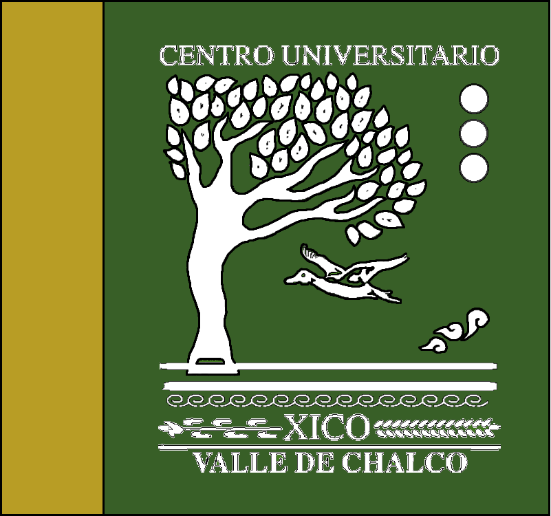
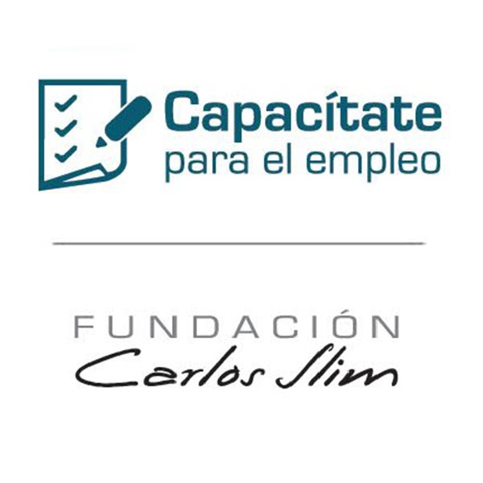
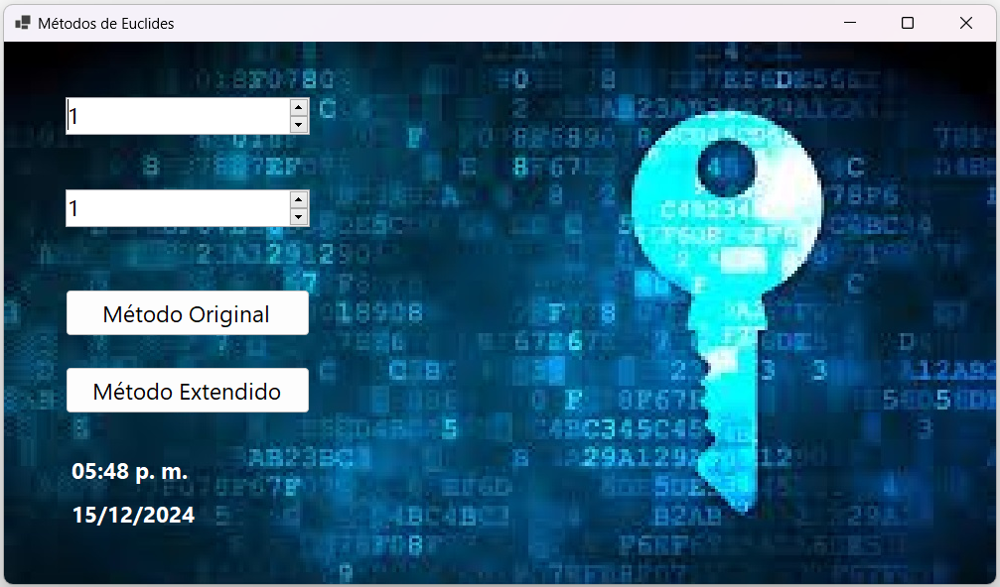
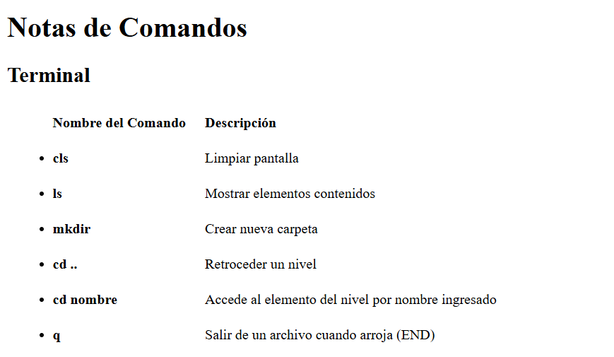

21 años. Estudiante de Ingeniería en Computación
Pasatiempos: Ritmos Latinos, Reinterpretación Musical, Natación, Repostería, Animación Digital, Programación
Estudiante de Ingeniería | Desarrollador
Java | C# | Python | SQL | HTML - CSS
21 años. Estudiante de Ingeniería en Computación
Pasatiempos: Ritmos Latinos, Reinterpretación Musical, Natación, Repostería, Animación Digital, Programación
Lógica de Programación Estructurada
Programación Orientada a Objetos
Desarrollo de Interfaces GUI | CLI
Diseño de Bases de Datos
Control de Versiones
Master en Front-end Dev.F Noviembre 2024 - Presente |
 | Licenciatura de Ingeniería en Computación Universidad Autónoma del Estado de México Agosto 2023 - Presente |
 | Desarrollo de Sitios Web y Aplicaciones Moviles Capacitate para el Empleo - Fundación Carlos Slim Enero 2021 - Presente |
|  |
Interfaz GUI de C# para calculos de MCD usando Algoritmo de EuclidesEl programa desarrolla el procedimiento para obtener el máximo común divisor de dos números naturales definidos por el usuario aplicando
el Algoritmo de Euclides Principal, o el extendido.
Se desarrolló a partir de una plantilla de form para C# en el IDE de Visual Studio 2022. Se utilizaron los objetos propios
de la clase form : NumericUpDown para definir solo los números permitidos de un intervalo, Button para seleccionar el método tradicional
que busca exclusivamente el MCD de los números definidos por el usuario, o el metodo extendido que satisfaga la ecuación diofántica
ax + by = MCD(a, b) en donde (a, b) son definidos por el usuario; el RichTextBox donde se arrojan los resultados; NumericUpDown se encarga
de validar los números a definir por el usuario en un intervalo establecido, y los labels que visualizan la fecha y hora con una función de
librerías. |
|  |
Página Web HTML con control de versiones Git y GitHubUna página web estática llevando el desarrollo de un control de versiones con Git sobre el proyecto.
Posteriormente de haber creado el último commit esperado
y sin presentar cambios pendientes, se empuja el proyecto a un repositorio remoto de GitHub aplicando el comando push, posteriormente utilizando la
configuración de GitHub Pages se crea la página web publicamente y accesible desde cualquier navegador con acceso a internet.
|